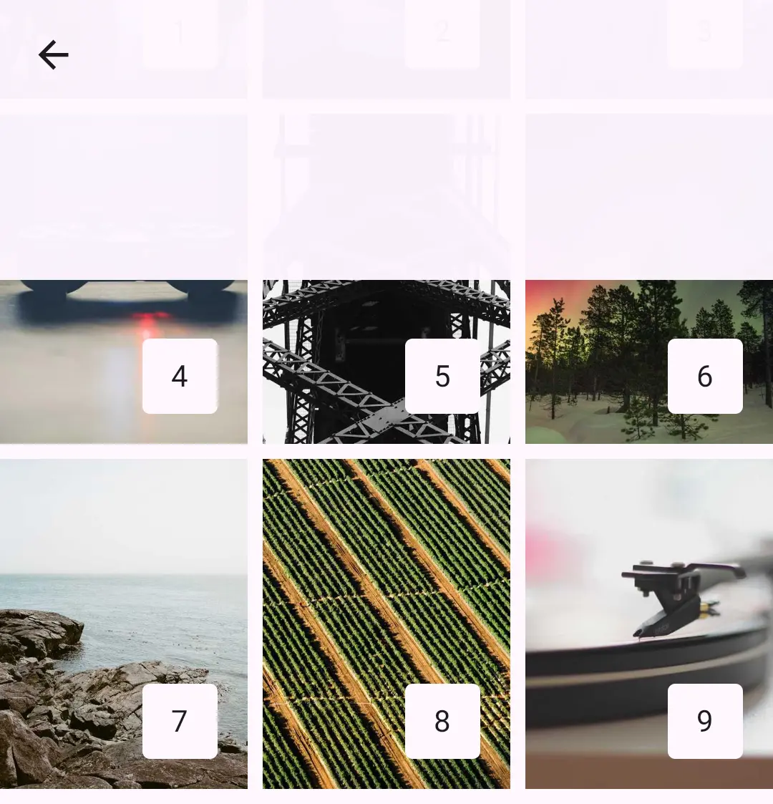

Platforms
Haze works on every platform Compose Multiplatform supports: Android, iOS, macOS, Desktop (JVM), and Web (Wasm and JS).
Compose Multiplatform platforms
Compose Multiplatform supports fewer platforms than Kotlin Multiplatform. Haze can only support a platform once Compose Multiplatform does.
Android¶
Haze supports Android 6.0 (API 23) and newer.
Android 13+¶
SDK Levels: 33+
All features are fully supported.
Android 12 & 12L¶
SDK Levels: 31 & 32
Blur is enabled by default, with these differences:
HazeProgressive¶
With a full-resolution performance mode, such as HazePerformanceMode.Quality, linear HazeProgressive effects are drawn several times. This costs more, so measure it for your workload.
Lower-resolution modes, such as HazePerformanceMode.Balanced, and all non-linear progressive types use a gradient mask instead. This blends between blurred and unblurred content rather than varying the blur strength.
Extra redraws¶
On Android 12 (API 31) and below, Haze redraws Blur more often than strictly necessary so that it stays in sync with the content behind it.
On API 31 only, Blur that reads HazeInput.Sources, including a HazeInput.Backdrop using its source fallback, also recaptures its input after any snapshot state change in the app, whichever window holds the source. With a hardware-accelerated canvas, Blur also rebuilds all of its effects, including every progressive band. With a software canvas, it blurs again with RenderScript instead. A running animation therefore does this once per frame, even if the animation is unrelated to the content behind the Blur. Blur that uses HazeInput.Content is not affected. This cost has not been measured. If you target API 31, profile your screens and disable Blur where it is too slow.
Sources in another window also recapture their input on every snapshot change on other API levels, and on platforms where Haze detects separate windows. See Dialogs.
Android 11 and below¶
SDK Levels: 30 and below
Blur is disabled by default. Haze draws a translucent scrim instead:

The scrim has no blurred content to filter. It draws a HazeColorEffect.colorFilter(...) as a white scrim passed through the filter, using the effect's blend mode, so a color filter that is the first color effect or the fallbackColorEffect may not look as intended. Set a tint as the fallbackColorEffect for a predictable scrim.
RenderScript blurring¶
You can enable Blur on these versions, which uses RenderScript.
Experimental
Blur on Android 11 and below is experimental. It may become the default in a future release, or be removed if it proves unstable. Please raise issues if you find problems.
This path is slower than on Android 12 and newer. To avoid dropping frames, Haze blurs on a background thread and skips frames while it is busy, so the Blur usually trails content changes by a frame or more. It can look laggy when the content behind it changes quickly. Progressive Blur uses a gradient mask, as described above.
RenderScript draws noise over the blur at the noise factor's opacity. On API 31 and newer with hardware acceleration, and on other platforms, noise uses the soft-light blend mode. The grain therefore looks different on the RenderScript path. API 31 and newer also use that path when the canvas is not hardware accelerated.
A HazeColorEffect.colorFilter(...) filters the blurred output, as it does on Android 12 and newer and on Skiko. It also filters the noise and any color effects before it in the list.
Thanks
Big thanks to Serhii Yaremych for his help on this, as we have managed to get an optimized 'content write' working. 🚀
Desktop¶
Desktop (JVM) is fully supported. See Skiko platforms.
iOS¶
iOS is fully supported. See Skiko platforms.
macOS¶
macOS is supported on Apple silicon (macosArm64). See Skiko platforms.
Web¶
Web is fully supported on Kotlin/Wasm and Kotlin/JS. See Skiko platforms.
Skiko¶
Desktop, iOS, macOS, and Web all render through Skiko, which bundles the Skia Graphics Library into your app. Blur behaves the same on all of them: every feature is supported and Blur is enabled by default.
Haze is built, tested, and released against the latest stable version of Compose Multiplatform.
Using pre-release versions of Compose Multiplatform¶
We occasionally verify against pre-release versions of Compose Multiplatform, but don't guarantee compatibility. Test thoroughly if you use one.